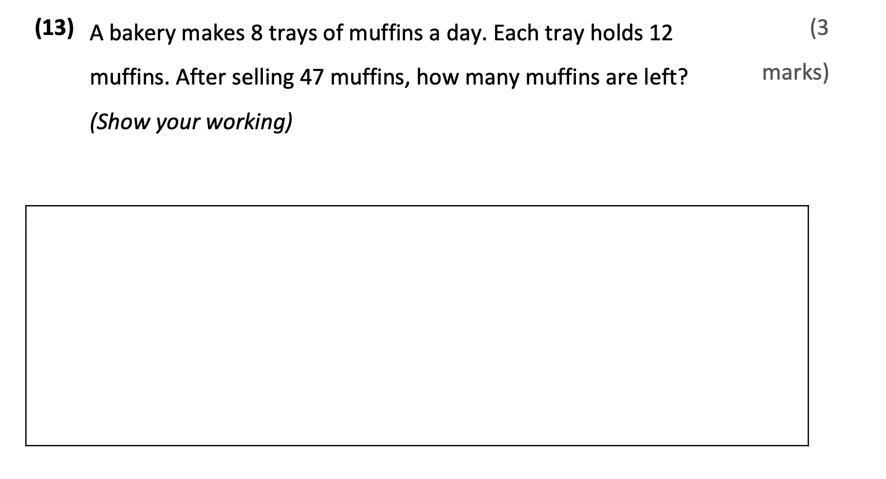
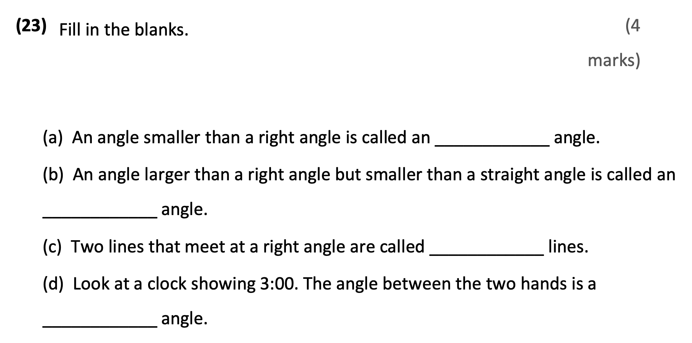

Mum ________ (buy) fresh vegetables now.
Answer: is buying
Explanation: 根据 look/listen/now 等提示判断现在进行时，结构为 be + 动词ing。
已掌握
| # | 单词/词组 | 中文意思 | 例句/说明 | 已掌握 |
|---|---|---|---|---|
| noun 名词 | ||||
| 1 | friend | 朋友 | My friend is kind. | |
| 2 | playground | 操场；游乐场 | The children run in the playground. | |
| 3 | window | 窗户 | Open the window, please. | |
| 4 | music | 音乐 | I can use music in class. | |
| 5 | Saturday | 周六 | I can use Saturday in class. | |
| 6 | claw | 爪子 | The cat has a sharp claw. | |
| 7 | activity | 活动 | This activity is fun. | |
| 8 | flower | 花 | This flower is red. | |
| 9 | breakfast | 早餐 | I can use breakfast in class. | |
| 10 | clinic | 诊所 | I can use clinic in class. | |
| verb 动词 | ||||
| 11 | dig | 挖 | The dog can dig a hole. | |
| phrase 短语 | ||||
| 12 | take off | 脱下 | Please take off your shoes. | |
| 13 | primary school | 小学 | I can use primary school in class. | |
| 14 | school bus | 校车 | I can use school bus in class. | |
| adjective 形容词 | ||||
| 15 | hungry | 饥饿的 | I am hungry now. | |
| 16 | untidy | 不爱干净的 | I can use untidy in class. | |
| verb/noun 动词/名词 | ||||
| 17 | travel | 旅行 | We travel during the holiday. | |
| uncategorized 未分类 | ||||
| 18 | throw | 扔掉 | I can use throw in class. | |
| 19 | cover | 遮盖 | I can use cover in class. | |
| 20 | believe | 相信 | I can use believe in class. | |
| # | 单词/词组 | 中文意思 | 例句/说明 | 已掌握 |
|---|---|---|---|---|
| adjective 形容词 | ||||
| 1 | brave | 勇敢的 | The brave boy helps others. | |
| noun 名词 | ||||
| 2 | character | 角色；人物 | The story has many characters. | |
| 3 | court | 球场 | We play on the court. | |
| 4 | stadium | 体育馆 | The game is in the stadium. | |
| 5 | moral | 道理 | The story has a moral. | |
| 6 | kind | 种类 | A dog is a kind of animal. | |
| 7 | piece | 一块/一张 | I want one piece of paper. | |
| 8 | musician | 音乐家 | The musician plays music. | |
| 9 | roundabout | 旋转木马 | The roundabout is in the playground. | |
| 10 | timetable | 时间表 | The timetable shows my classes. | |
| 11 | picnic | 野餐 | We have a picnic in the park. | |
| phrase 短语 | ||||
| 12 | Hong Kong Island | 香港岛 | I can use Hong Kong Island in class. | |
| 13 | step on | 踩到 | I can use step on in class. | |
| 14 | look at | 看 | I can use look at in class. | |
| 15 | ice lollies | 雪糕 | I can use ice lollies in class. | |
| adjective/noun 形容词/名词 | ||||
| 16 | round | 圆形 | The ball is round. | |
| uncategorized 未分类 | ||||
| 17 | line | 行数 | I can use line in class. | |
| 18 | assessment | 测试 | I can use assessment in class. | |
| 19 | False | 错误的 | I can use False in class. | |
| 20 | suitable | 合适的 | I can use suitable in class. | |
| 21 | phrases | 短语 | I can use phrases in class. | |
| 22 | structure | 结构 | I can use structure in class. | |
| 23 | improvement | 提升 | I can use improvement in class. | |
| 24 | shout | 喊 | I can use shout in class. | |
| 25 | model | 模范 | I can use model in class. | |
| 26 | royal | 皇家的 | I can use royal in class. | |
| 27 | lollies | 棒棒糖 | I can use lollies in class. | |
| 28 | campsite | 营地 | I can use campsite in class. | |
| 29 | adult | 成年人 | I can use adult in class. | |
| 30 | detail | 细节 | I can use detail in class. | |
| # | 单词/词组 | 中文意思 | 例句/说明 | 已掌握 |
|---|---|---|---|---|
| time/date 时间日期 | ||||
| 1 | February | 二月 | February is the second month. | |
| 2 | July | 七月 | July is the seventh month. | |
| 3 | September | 九月 | September is the ninth month. | |
| 4 | Wednesday | 星期三 | Wednesday is a weekday. | |
| 5 | Thursday | 星期四 | Thursday is a weekday. | |
| 6 | Sunday | 星期日 | Sunday is a weekend day. | |
| time unit 时间单位 | ||||
| 7 | day | 日 | A day has 24 hours. | |
| 8 | minute | 分 | A minute has 60 seconds. | |
| directions 方向 | ||||
| 9 | west | 西 | The sun sets in the west. | |
| numbers 数字 | ||||
| 10 | fifteen | 15 | Fifteen is 15. | |
| 11 | seventy | 70 | Seventy is 70. | |
| ordinal numbers 序数 | ||||
| 12 | second | 第二 | This is the second shape. | |
| solid shape 立体图形 | ||||
| 13 | pentagonal pyramid | 五棱锥 | A pentagonal pyramid has pentagonal faces. | |
| 14 | cylinder | 圆柱 | A cylinder has two circular faces. | |
| 15 | sphere | 球 | A sphere is round. | |
| # | 单词/词组 | 中文意思 | 例句/说明 | 已掌握 |
|---|---|---|---|---|
| operations 运算 | ||||
| 1 | altogether | 一起 | How many are there altogether? | |
| geometry 几何 | ||||
| 2 | angle | 角 | An angle is made by two lines meeting. | |
| 3 | obtuse angle | 钝角 | An obtuse angle is larger than a right angle. | |
| 4 | grid | 网格 | A grid helps us find positions. | |
| 5 | adjecent side | 邻边 | I can read adjecent side in a math question. | |
| question word 题目词 | ||||
| 6 | compare | 比较 | We compare two numbers. | |
| 7 | calculate | 计算 | Calculate the answer. | |
| 8 | estimate | 估计 | Estimate the answer first. | |
| 9 | onwards | 向前；继续向前 | Count onwards from 20. | |
| 10 | match | 匹配 | Match the number to the word. | |
| 11 | respectively | 分别地 | Tom and Ben have 2 and 3 books respectively. | |
| place value 位值 | ||||
| 12 | units | 个位 | The digit is in the units place. | |
| time/date 时间日期 | ||||
| 13 | leap year | 闰年 | A leap year has 366 days. | |
| 14 | common year | 平年 | I can read common year in a math question. | |
| quantity 数量 | ||||
| 15 | pair | 双 | A pair means two things together. | |
| position 位置 | ||||
| 16 | below | 下面 | The box is below the table. | |
| 17 | front | 前面 | The door is at the front of the room. | |
| 18 | above | 上面 | The clock is above the board. | |
| operations calculation 运算 | ||||
| 19 | equally | 平等地 | Share the apples equally. | |
| 20 | dividend | 被除数 | The dividend is divided by the divisor. | |
| teacher math vocabulary 老师数学词汇 | ||||
| 21 | each | 每个 | I can read each in a math question. | |
| measurement 测量 | ||||
| 22 | centimetre | 厘米 | A centimetre is a small unit of length. | |
| 23 | measure | 测量 | We measure the length with a ruler. | |
| 24 | distance | 距离 | Find the distance between the two points. | |
| geometry tool 几何工具 | ||||
| 25 | set square | 三角尺 | A set square helps us draw angles. | |
| 26 | geo-strip | 几何条 | A geo-strip can help make shapes. | |
| 句型结构 | ||||
| 27 | Angle ... is larger than Angle ... | 角......大于角...... | Angle A is larger than Angle B. | |
| 28 | Angle ... is the largest. | 角......是最大的。 | Angle A is the largest. | |
| 29 | ... is to the east of ... | ......位于......的东侧。 | The school is to the east of the park. | |
| 30 | ... is to the north of ... | ......位于......的北侧。 | The playground is to the north of the hall. | |



